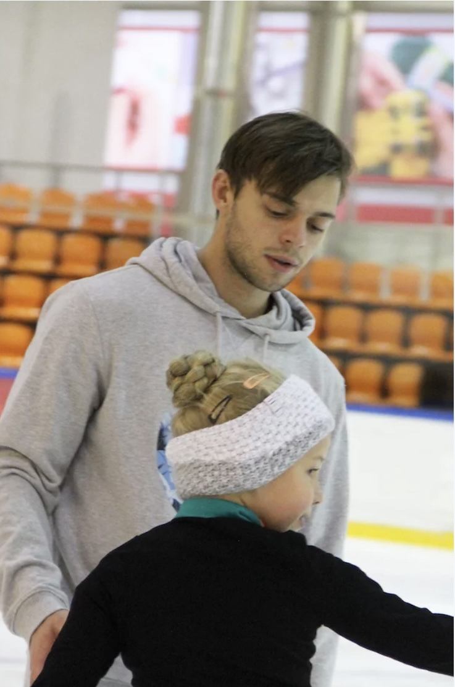

Санкт-Петербургское государственное бюджетное учреждение Спортивная
школа по фигурному катанию на коньках.
Тренерский состав:
Мастера спорта и КМС по фигурному катанию с опытом работы от 5 лет
1)Пегеев Вячеслав
Старший тренер секции фигурного катания, специалист в области
постановки прыжков. Тренер взрослой и спортивной групп
Профессиональный преподаватель фигурного катания, двукратный
чемпион мира по фигурному катанию среди спортивных балетов на льду

2)Денисова Васелина
Педагог, инструктор - преподаватель фигурного катания для детей,
специалист по растяжке и общей физической подготовке Участница
престижнейших мировых ледовых шоу, специалист в области растяжки и
общей физической подготовки, тренер детской группы с 3-х лет